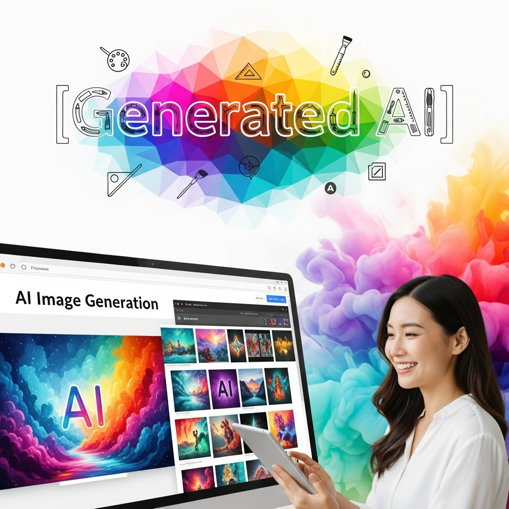
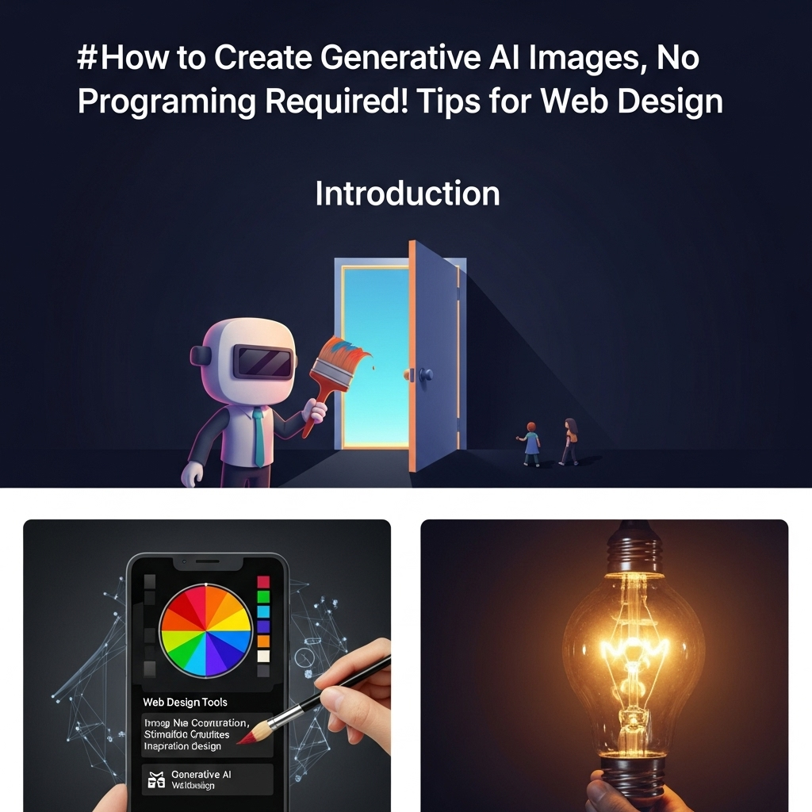
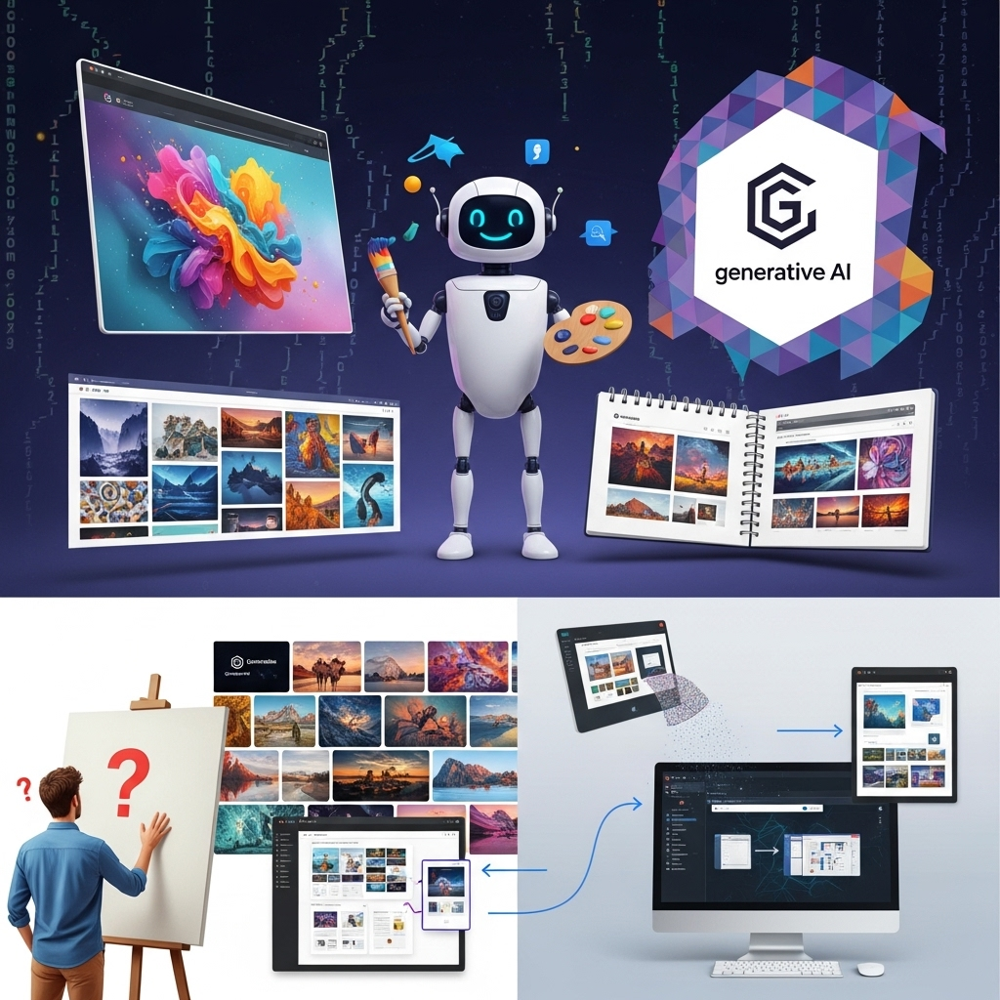
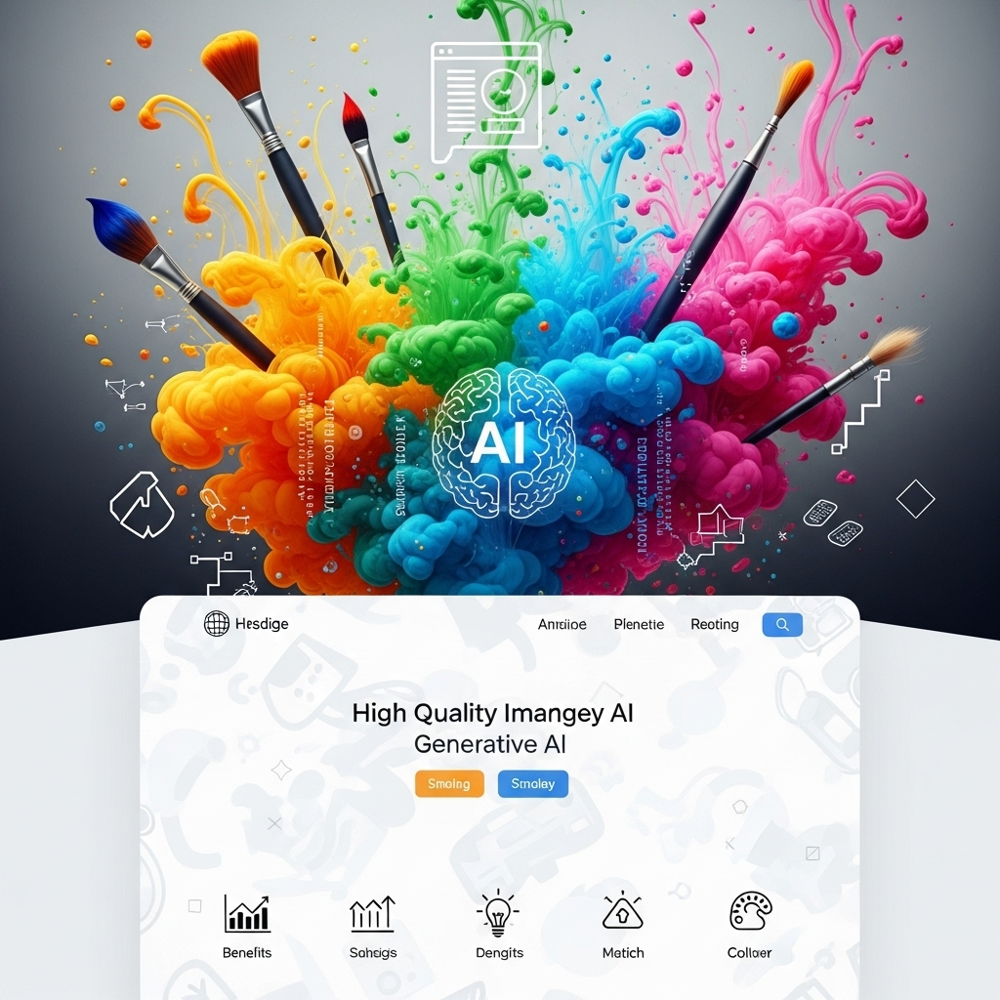
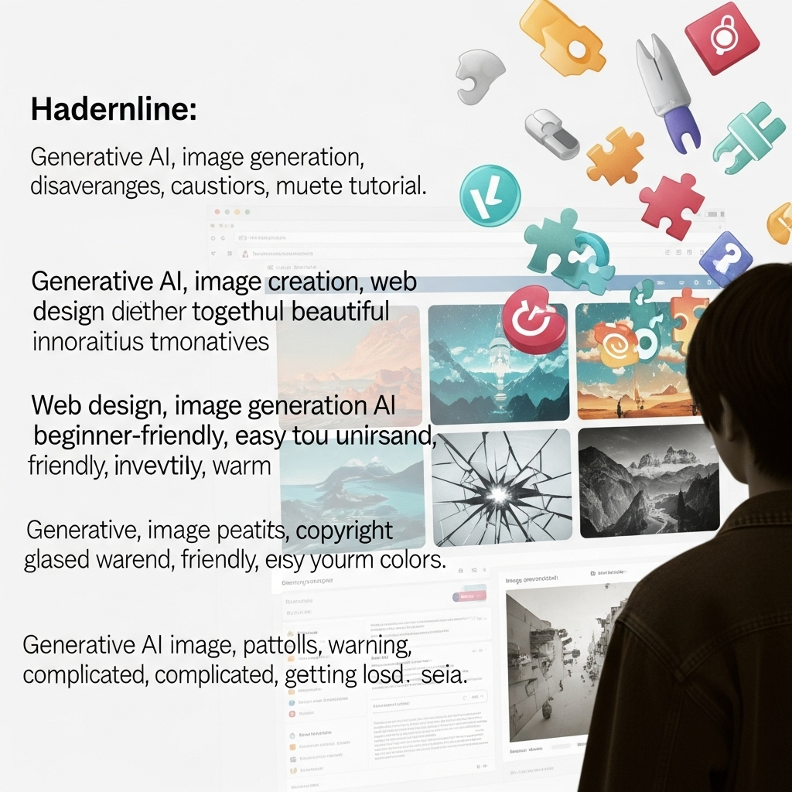
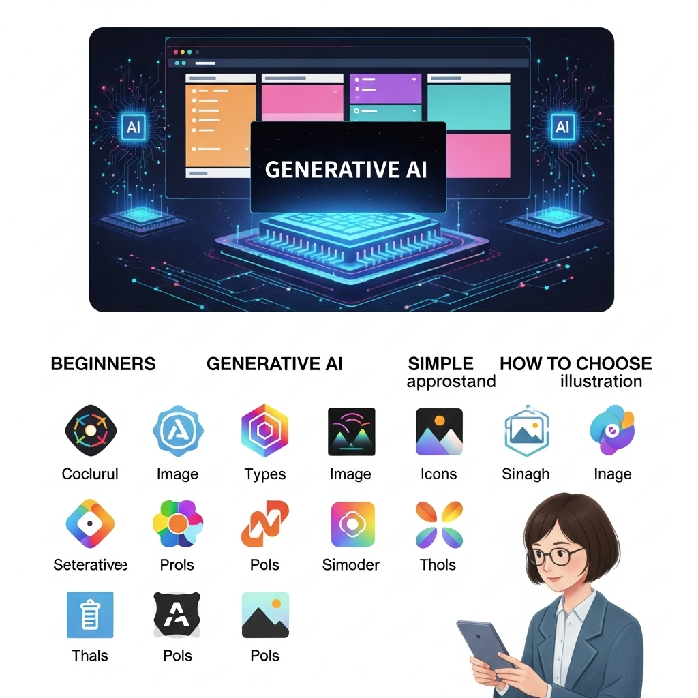
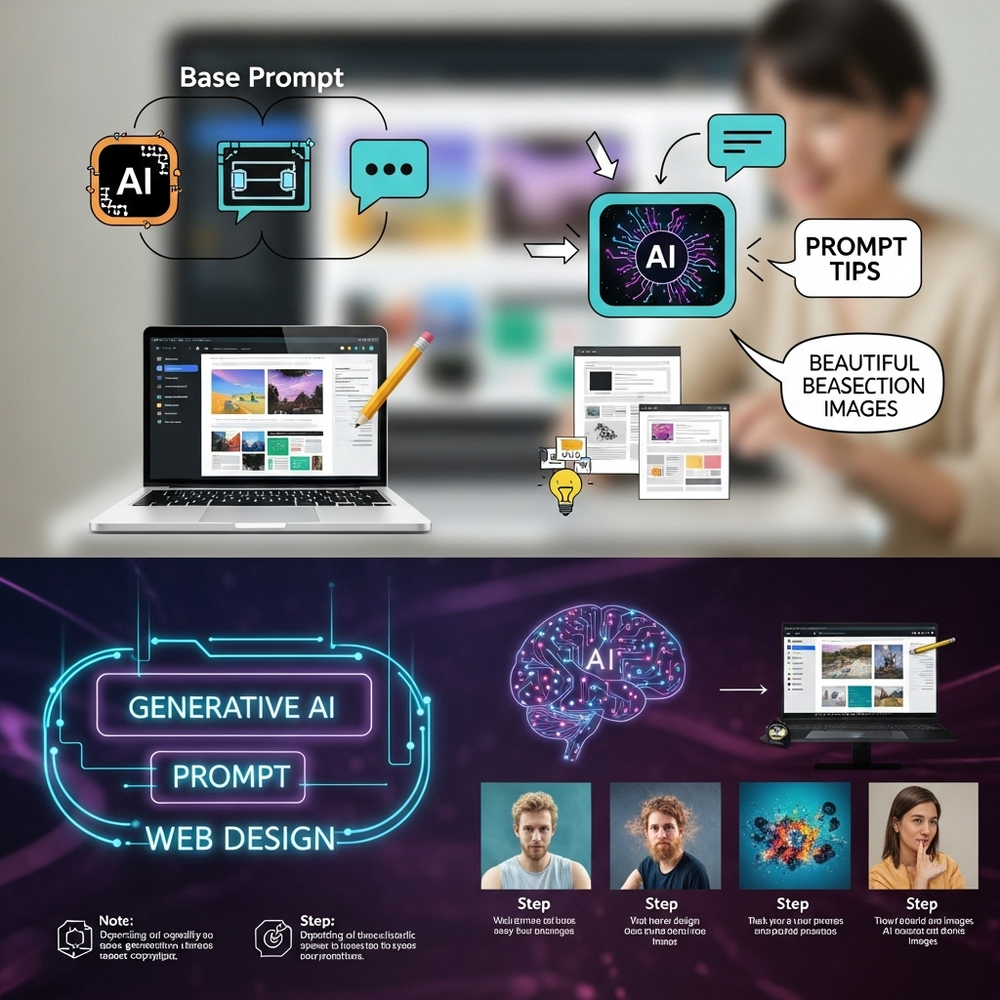
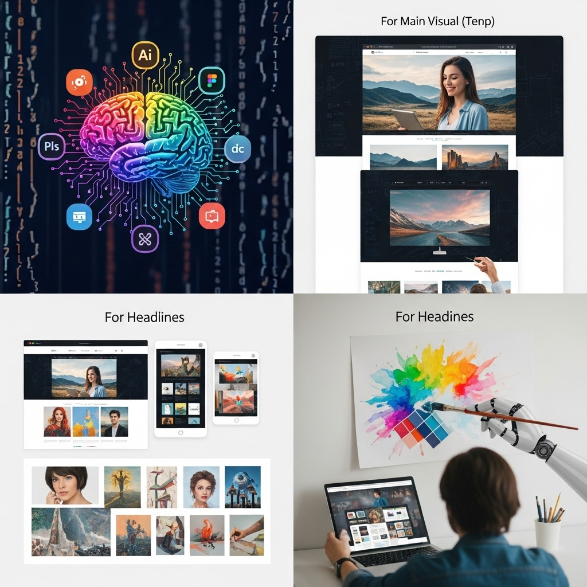
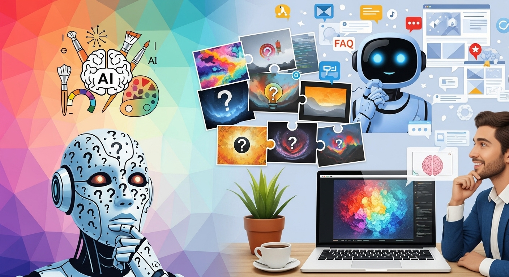

生成AI画像の作り方｜プログラミング不要！Webデザインに活かすコツ

導入

デジタルクリエイティブの世界は、日進月歩で進化を続けています。特に近年、私たちの想像力を形にする新たなツールとして「生成AI」が大きな注目を集めています。まるで魔法のように、テキストの指示だけで高品質な画像を生成できるこの技術は、Webデザインの現場にも革新の波をもたらしています。
「AIで画像を生成するなんて、なんだか難しそう」「プログラミングの知識がないと使えないのでは？」そうお考えの方もいらっしゃるかもしれませんね。しかしご安心ください。現在の生成AI画像ツールは、プログラミングの知識が一切なくても、誰もが直感的に、そして驚くほど簡単に使いこなせるように進化しています。
このガイドでは、Webデザインに生成AI画像をどのように活かせるのか、その具体的な作り方から、メリット・デメリット、そして効果的な活用アイデアまで、皆さんが一歩踏み出すための知識を網羅的にご紹介します。デザインスキルに自信がない方も、表現の幅を広げたい方も、制作を効率化したい方も、きっと新たな可能性を見つけられるはずです。さあ、一緒に生成AI画像の魅力的な世界を覗いてみましょう。
段落1：生成AI画像とは？Webデザインで『作り方』を学ぶ意義

生成AI画像とは、人工知知能がテキストの指示（プロンプト）や既存の画像データに基づいて、まったく新しい画像を自動で作り出す技術のことです。まるで「こんな絵を描いてほしい」とAIに頼むだけで、それが形になるようなイメージですね。
この技術は、特にWebデザインの分野において、これまでの制作プロセスや表現方法に大きな変革をもたらす可能性を秘めています。なぜ今、Webデザインに携わる私たちが、その「作り方」を学ぶべきなのでしょうか。その背景と可能性について、詳しく見ていきましょう。
段落1-1：生成AI画像が注目される背景
生成AI画像がこれほどまでに注目を集めるようになった背景には、いくつかの重要な要因があります。
まず第一に、AI技術の飛躍的な進化が挙げられます。特に、ディープラーニング（深層学習）と呼ばれるAIの一分野が目覚ましい発展を遂げ、画像認識や自然言語処理の精度が格段に向上しました。これにより、AIが人間の言葉を理解し、それに基づいて複雑な画像を生成する能力が現実のものとなったのです。
次に、高性能なコンピューティングリソースの普及も大きな要因です。AIモデルの学習や画像生成には膨大な計算能力が必要ですが、クラウドサービスの進化やGPUの高性能化により、個人でも手軽に利用できる環境が整ってきました。以前は研究機関や大企業でしか扱えなかった技術が、今や私たちの手の届くところにあるのです。
そして、最も大きな変化は、直感的で使いやすいツールの登場でしょう。以前は専門的な知識やプログラミングスキルが必須だったAIツールが、現在ではWebブラウザ上でテキストを入力するだけで画像を生成できるサービスが数多く登場しています。これにより、デザイナーやクリエイターはもちろん、一般のユーザーでも気軽にAI画像生成を試せるようになり、その可能性が広く認知されるようになりました。
このような背景から、生成AI画像は、単なる技術的なトレンドに留まらず、私たちのクリエイティブな活動を根本から変えるゲームチェンジャーとして、世界中で大きな注目を集めているのです。
段落1-2：Webデザインにおける生成AIの可能性
では、この生成AI画像は、Webデザインの分野で具体的にどのような可能性を秘めているのでしょうか。
最も直接的な可能性は、ビジュアルコンテンツの制作効率とクオリティの劇的な向上です。WebサイトやSNS、ブログ記事など、あらゆるデジタルコンテンツにおいて、魅力的な画像はユーザーの目を引き、情報を効果的に伝える上で不可欠です。しかし、これらの画像をゼロから制作するには、時間、コスト、そして専門的なスキルが必要でした。生成AI画像を使えば、以下のようなメリットが期待できます。
- 多様なビジュアルの迅速な生成: サイトのコンセプトに合わせたイラスト、写真、アイコン、背景画像などを、短時間で大量に生成し、様々なバリエーションを試すことができます。
- デザインの試行錯誤の加速: 複数のデザイン案やレイアウトを検討する際に、AIが生成した画像を仮素材として活用することで、より多くのアイデアをスピーディーに検証できます。
- 既存素材の限界を超える表現: 既存のストックフォトやイラストでは見つからないような、ユニークでオリジナリティあふれる画像を生成し、サイトの個性を際立たせることが可能です。
- パーソナライズされたコンテンツの提供: ユーザーの行動や属性に合わせて、AIが自動で画像を生成・最適化することで、よりパーソナルなWeb体験を提供できるようになるかもしれません。
例えば、新しい商品を紹介するランディングページをデザインする際、これまでは撮影スタジオを手配したり、イラストレーターに依頼したり、ストックフォトを探したりと、多くの手間と時間がかかっていました。しかし、生成AIを使えば、「未来的なデザインのスマートフォンが、光り輝く宇宙空間に浮かんでいるイメージ」といった具体的な指示を出すだけで、短時間のうちに複数の高品質なビジュアル案を手に入れることができるのです。
また、生成AIは、単に画像を生成するだけでなく、デザインプロセスそのものに変革をもたらす可能性も秘めています。例えば、Webサイトのワイヤーフレームからデザインコンセプトを読み取り、自動でビジュアル要素を生成したり、ユーザーのフィードバックを元にデザインを修正・改善したりといった、より高度な連携も将来的には期待できるでしょう。
このように、Webデザインにおける生成AIの活用は、クリエイターの創造性を拡張し、デザインの可能性を無限に広げる、まさに「未来のツール」と言えるでしょう。今からその「作り方」を学び、使いこなすことは、Webデザイナーとしての競争力を高め、新たなキャリアパスを切り開く上で、非常に大きな意義があると言えます。
段落2：生成AI画像をWebデザインに活用するメリット

生成AI画像をWebデザインに活用することは、私たちのクリエイティブな活動に数えきれないほどの恩恵をもたらします。ここでは、特にWebデザイナーやコンテンツクリエイターにとって魅力的な四つのメリットに焦点を当て、その具体的な内容を詳しく見ていきましょう。
段落2-1：メリット１．デザインスキル不足を補いクオリティ向上
「絵心がないからイラストは描けない」「写真撮影は苦手で、プロのようなビジュアルは作れない」――デザインスキルに自信がない方にとって、生成AI画像はまさに救世主となり得ます。
Webサイトやブログ、SNS投稿において、視覚的に魅力的な画像はユーザーのエンゲージメントを高める上で不可欠です。しかし、高品質なビジュアルを制作するには、専門的なデザインスキルやツール、そして多くの経験が必要とされてきました。
生成AI画像は、あなたの頭の中にある漠然としたイメージを、具体的なプロンプト（指示文）として入力するだけで、AIがそのイメージを具現化してくれます。例えば、「夕焼けを背景にした幻想的な森のイラスト」や「ミニマルなデザインのオフィス空間の写真」といった指示を出すだけで、まるでプロのアーティストが描いたかのようなイラストや、熟練のフォトグラファーが撮影したような写真を瞬時に手に入れることができるのです。
これにより、デザインスキルに不安がある方でも、Webサイトのメインビジュアル、ブログ記事のアイキャッチ、SNS投稿のバナーなど、あらゆる場面で高品質なビジュアルコンテンツを自力で制作できるようになります。結果として、サイト全体のデザインクオリティが向上し、訪問者への印象を大きく高めることができるでしょう。
さらに、AIが生成する画像は、特定のスタイルやトーンに合わせて調整することも可能です。「水彩画風」「油絵風」「サイバーパンク調」「リアルな写真風」など、多様な表現方法を試すことで、あなたのWebデザインに一貫した世界観や個性を加えることができます。これにより、デザインの幅が広がるだけでなく、あなたのクリエイティブなアイデアをより自由に、そして高いクオリティで表現することが可能になるのです。
段落2-2：メリット２．制作コストと時間の削減
Webサイト制作やコンテンツ作成において、ビジュアル素材の準備は大きなコストと時間を要するプロセスの一つです。プロのカメラマンやイラストレーターへの依頼、ストックフォトサイトでの素材購入、あるいは自分で撮影・制作するにしても、それなりの費用と労力がかかります。
ここで生成AI画像が大きな威力を発揮します。生成AIツールを使えば、外注費用を大幅に削減できるだけでなく、素材探しの手間や制作時間を劇的に短縮することが可能です。
例えば、特定のテーマに沿ったオリジナルのイラストや写真が必要な場合を考えてみましょう。これまでは、イラストレーターに依頼すれば数万円から数十万円の費用と数日～数週間の納期がかかり、ストックフォトサイトで探すにしても、イメージ通りの素材が見つからなかったり、高額なライセンス料が必要になったりすることがありました。
しかし、生成AIを使えば、数分から数十分で、あなたの指示に合わせた画像を複数枚生成できます。ほとんどの生成AIツールは、月額定額制やクレジット購入制で利用でき、外注費用と比較すればはるかにリーズナブルです。無料プランや無料試用期間が用意されているツールも多く、初期コストを抑えて始められるのも魅力です。
これにより、予算が限られたプロジェクトでも、妥協することなく高品質なビジュアルを揃えることが可能になります。また、急なデザイン変更や追加素材が必要になった際にも、AIを介して迅速に対応できるため、プロジェクト全体の進行をスムーズにし、デッドラインへのプレッシャーを軽減する効果も期待できます。
制作にかかる時間とコストを削減できれば、その分を他の重要なデザイン作業やマーケティング活動に充てることができます。これは、Webデザイナーや企業にとって、非常に大きな経営的なメリットとなるでしょう。
段落2-3：メリット３．表現の幅を広げ、アイデアを具現化
クリエイターにとって、最も喜びを感じるのは、頭の中にあるアイデアを形にし、新しい表現を追求することではないでしょうか。生成AI画像は、まさにその「表現の幅」を無限に広げ、これまでは不可能だと思われていたアイデアさえも具現化する力を秘めています。
従来の制作手法では、自分のスキルや利用できる素材の範囲内でしか表現できませんでした。しかし、生成AIは、あなたの想像力をそのままビジュアルとして出力してくれるため、既存の枠にとらわれない、唯一無二のデザインを生み出すことが可能です。
例えば、「未来都市の路地裏で、ネオンサインが輝く雨の夜の風景」といった具体的な情景だけでなく、「希望を象徴する抽象的な光の粒子が、デジタル空間を漂うイメージ」のような、抽象的で概念的なアイデアも、プロンプトを工夫することで具現化できます。
また、生成AIは、これまで組み合わせることが難しかった要素を自由に融合させることも得意です。「猫の顔を持つサイボーグが、中世ヨーロッパ風の城にいる」といった、常識を超えた組み合わせでも、AIは違和感なく画像を生成しようと試みます。これにより、既存の素材では決して表現できなかったような、斬新でインパクトのあるビジュアルを創出できるのです。
さらに、AIが生成する画像は、あなた自身のクリエイティブな発想を刺激し、新たなアイデアの源泉となることもあります。AIが予期せぬ形で生成した画像からインスピレーションを得て、そこからさらに別のデザインコンセプトを練り上げる、といった創造的なループが生まれることも少なくありません。
Webデザインにおいて、このような豊かな表現力は、ブランドの個性を際立たせ、ユーザーに強い印象を与える上で非常に重要です。生成AIを使いこなすことで、あなたのWebサイトは、単なる情報伝達の場ではなく、見る人の心に訴えかけるアート作品のような魅力を持つことができるでしょう。
段落2-4：メリット４．ポートフォリオやSNS発信力強化
Webデザイナーにとって、自身のスキルやセンスをアピールするポートフォリオサイトは、名刺代わりとなる非常に重要なツールです。また、SNSでの積極的な情報発信は、自身のブランドを確立し、新たな仕事の機会を掴む上で欠かせません。生成AI画像は、これらのポートフォリオやSNS発信力を劇的に強化する強力な武器となります。
まず、ポートフォリオサイトにおいて、生成AI画像はデザインの多様性とクオリティを示すのに役立ちます。これまでは、自分が実際に手掛けたプロジェクトの中からしか作品を選べませんでしたが、AIを使えば、架空のクライアントやプロジェクトを想定し、そのためのビジュアルを自由に制作できます。
例えば、「もし自分が大手IT企業のWebサイトをリニューアルするなら」といったテーマで、AIを使ってコンセプトアートやメインビジュアルを生成し、それをポートフォリオに加えることができます。これにより、あなたのデザインスキルだけでなく、発想力やトレンドをキャッチアップする能力もアピールできるでしょう。高品質でユニークなAI生成画像は、採用担当者や潜在的なクライアントの目を引き、あなたのポートフォリオをより魅力的なものに変えるはずです。
次に、SNSでの発信力強化についてです。SNSでは、視覚的なインパクトが非常に重要であり、魅力的な画像は投稿のエンゲージメントを高める上で不可欠です。生成AIを使えば、日々の投稿に合わせたオリジナルのアイキャッチ画像やバナーを迅速に制作できます。
例えば、デザインに関するTipsを共有する際に、その内容を象徴するような抽象的なイラストをAIに生成させたり、最新のデザイントレンドを紹介する際に、そのトレンドを反映した未来的な画像を生成したりと、様々な活用が考えられます。これにより、あなたのSNSアカウントは、常に新鮮で高品質なビジュアルコンテンツで溢れ、フォロワーの増加や「いいね」の獲得に繋がりやすくなるでしょう。
さらに、AI生成画像そのものをテーマにしたコンテンツを発信することも可能です。「AIでこんな画像を作ってみた！」「プロンプトのコツを公開」といった形で、自身のAI活用術を共有することで、他のクリエイターやAIに興味を持つ人々との交流を深め、コミュニティ内でのプレゼンスを高めることもできます。
このように、生成AI画像を使いこなすことは、あなたのポートフォリオをより充実させ、SNSでの発信力を高めることで、キャリアアップやビジネスチャンスの拡大に直結する大きなメリットをもたらします。
段落3：生成AI画像を使う上でのデメリットと注意点

生成AI画像は非常に魅力的で便利なツールですが、活用する上で知っておくべきデメリットや注意点も存在します。これらの点を理解し、適切に対処することで、トラブルを避け、より安全で効果的にAI画像をWebデザインに組み込むことができるでしょう。
段落3-1：デメリット１．著作権・肖像権に関する懸念
生成AI画像を扱う上で、最もデリケートで重要な問題の一つが、著作権と肖像権に関する懸念です。AIは、インターネット上の膨大な画像を学習データとして利用して画像を生成します。この学習データの中には、著作権で保護された画像や、特定の人物の肖像が含まれている可能性があります。
まず、著作権についてです。
AIが生成した画像そのものの著作権は、各ツールの利用規約によって異なります。多くのツールでは、生成された画像の著作権はユーザーに帰属するとされていますが、中にはツール提供元に帰属する場合や、商用利用に制限がある場合もあります。最も注意すべき点は、生成された画像が、既存の特定の著作物に酷似している、あるいはそれを模倣していると判断されるリスクです。
AIは学習データからパターンを学ぶため、特定のアーティストの画風や、有名キャラクター、ロゴなどを意図せず模倣してしまうことがあります。もし、生成された画像が既存の著作権を侵害していると判断された場合、法的な問題に発展する可能性があります。特に商用利用を考えている場合は、このリスクを十分に理解し、注意深く画像をチェックする必要があります。
次に、肖像権についてです。
AIは、実在の人物の画像を学習データとして利用しているため、生成された画像が、特定の個人を識別できる形で描写されている場合があります。もし、その人物の許可なく画像をWebサイトやSNSで公開した場合、肖像権の侵害となる可能性があります。特に、有名人や著名人の顔に似た画像が生成された場合は、注意が必要です。
これらの懸念に対処するためには、以下の点に留意しましょう。
- 各ツールの利用規約を熟読する: 利用したい生成AIツールの著作権に関するポリシー、商用利用の可否、学習データの扱いについて、必ず事前に確認してください。
- 生成画像のオリジナル性を確認する: 生成された画像が、既存の著作物や人物に酷似していないか、慎重に確認しましょう。特に商用利用する場合は、より厳重なチェックが必要です。
- プロンプトの工夫: 特定のアーティスト名やキャラクター名をプロンプトに含めない、具体的な人物の描写を避けるなど、著作権・肖像権侵害のリスクを低減するプロンプト作成を心がけましょう。
- 免責事項の理解: 多くのツールでは、生成された画像に関する著作権侵害のリスクについて、ツール提供側は責任を負わない旨の免責事項が記載されています。最終的な責任はユーザーにあることを理解しておく必要があります。
著作権・肖像権の問題は、まだ法整備が追いついていない部分も多く、今後の動向を注視していく必要があります。常に最新の情報をキャッチアップし、倫理的な配慮を持ってAI画像を扱うことが求められます。
段落3-2：デメリット２．イメージ通りの画像生成が難しい場合も
生成AIは非常に強力なツールですが、「こんな画像を生成してほしい」と指示した際に、必ずしも完璧にイメージ通りの画像が生成されるとは限りません。これは、AIの仕組みと、プロンプト（指示文）の書き方に起因するデメリットです。
AIは、入力されたテキストを解釈し、学習データの中から関連性の高い要素を組み合わせて画像を生成します。しかし、人間の持つ微妙なニュアンスや、言葉では表現しきれない感覚的なイメージを、AIが完全に理解することはまだ難しいのが現状です。
具体的には、以下のような状況が起こりえます。
- プロンプトの解釈のずれ: 同じ言葉でも、AIが人間とは異なる解釈をする場合があります。例えば、「美しい風景」と指示しても、AIが「何をもって美しいとするか」の基準が、あなたのイメージと異なることがあります。
- 要素の組み合わせの不自然さ: 複数の要素を組み合わせるプロンプトの場合、AIがそれらをうまく融合させられず、不自然な構図や、要素同士が矛盾した画像が生成されることがあります。
- 細部の破綻: 全体的な構図は良くても、人物の手足の指の数が多かったり少なかったり、背景のオブジェクトが奇妙な形をしていたりするなど、細部に不自然な箇所が見られることがあります。
- 抽象的な指示の難しさ: 具体的な描写が少ない抽象的なプロンプトでは、AIが意図を掴みきれず、期待とは異なる画像が生成されやすくなります。
このような場合、何度もプロンプトを修正したり、試行錯誤を繰り返したりする手間が発生します。まるで、優秀なアシスタントに指示を出すように、より具体的で詳細な言葉を選び、時にはネガティブプロンプト（生成してほしくない要素を指定する指示）を活用するなど、工夫が必要になります。
しかし、この「イメージ通りにならない」という経験も、決して無駄ではありません。むしろ、AIと対話する中で、自分のイメージをより明確にし、それを言葉で表現するスキルを磨く良い機会となるでしょう。また、AIが予期せず生成した画像から、新たなアイデアが生まれることもあります。
このデメリットを乗り越えるためには、試行錯誤を楽しむ姿勢と、プロンプトエンジニアリングのスキルを磨くことが重要です。後述する「プロンプトのコツ」のセクションで、具体的な解決策をご紹介しますので、ぜひ参考にしてみてください。
段落3-3：デメリット３．AI特有の不自然さや修正の手間
生成AI画像は非常に高品質なものを生み出せるようになりましたが、それでもAI特有の不自然さや、完璧ではない部分が残ることがあります。特に、人物の描写や複雑な構図において、その傾向が見られやすいです。
具体的には、以下のような「AIあるある」とも言える現象が見られます。
- 人物の身体の破綻: 特に手や指、足などの描写は、AIが苦手とする部分です。指の数が多かったり少なかったり、関節の向きが不自然だったりすることがよくあります。顔の表情も、一見自然に見えてもよく見ると感情が読み取りにくい、あるいは左右非対称であるといったケースもあります。
- 背景やオブジェクトの違和感: 遠景の建物が歪んでいたり、特定のオブジェクトの形状が現実にはありえない形をしていたり、光の当たり方が不自然だったりすることがあります。
- テキストの生成の困難さ: AIは文字を画像として認識するため、プロンプトで指定した通りの文字やロゴを正確に画像内に描写することは非常に困難です。意味不明な記号のような文字が生成されることがほとんどです。
- 一貫性の欠如: シリーズものや、複数の画像で一貫したキャラクターやスタイルを維持することは、現在のAIではまだ難しい課題です。
これらの不自然な点が Webサイトやコンテンツのクオリティを損なう可能性があるため、生成された画像をそのまま使うのではなく、修正や加工の手間が必要になることがほとんどです。
例えば、
- PhotoshopやCanvaなどの画像編集ツールで、不自然な部分を修正したり、切り抜いたり、色調を補正したりする。
- AI編集機能（Inpainting: 画像の一部をAIで修正する機能、Outpainting: 画像の外部をAIで拡張する機能など）を活用して、より自然な仕上がりにする。
- 複数の生成画像を組み合わせることで、より良いものを作り出す。
といった作業が求められます。
「プログラミング不要！」と謳っている生成AI画像ツールですが、画像編集の基本的なスキルは、生成AI画像を効果的に活用する上で依然として重要です。AIが生成した画像を最終的な完成形とするのではなく、「素材の一つ」と捉え、自身のスキルでさらに磨き上げるという意識が大切になります。
この修正や加工のプロセスも、AI画像を使いこなす上での重要なスキルの一つです。AIが苦手とする部分を理解し、それを補うための編集技術を身につけることで、より高品質でプロフェッショナルなWebデザインを実現できるでしょう。
段落3-4：デメリット４．最新情報の継続的なキャッチアップが必要
生成AIの分野は、まさに光の速さで進化を続けています。昨日まで最先端だった技術が、今日には新しいモデルや機能によって更新されている、といったことも珍しくありません。この技術進化の速さが、生成AI画像を使いこなす上での一つのデメリットであり、同時に重要な注意点となります。
具体的には、以下のような変化が頻繁に起こります。
- 新しいAIモデルの登場: より高性能で、より使いやすい新しいAI画像生成モデルが次々と発表されます。
- ツールの機能更新: 既存のツールも、新しい機能（例: 画像からの画像生成、特定のスタイルへの変換など）が追加されたり、UIが改善されたりします。
- プロンプトのトレンドの変化: 効率的にイメージ通りの画像を生成するためのプロンプトの書き方や、効果的なキーワードの組み合わせなども、コミュニティの発見やAIモデルのアップデートによって変化していきます。
- 利用規約や料金体系の変更: 各ツールの利用規約、特に商用利用に関するルールや、サブスクリプションの料金体系が変更されることがあります。
- 法整備の動向: 著作権や倫理に関する議論は活発に行われており、将来的に法的な規制やガイドラインが整備される可能性があります。
これらの変化に追いついていくためには、継続的に最新情報をキャッチアップする努力が不可欠です。
もし情報収集を怠ってしまうと、
- 最新の高性能なツールや機能を活用できず、効率やクオリティで差をつけられてしまう。
- 古いプロンプトの知識に固執し、イメージ通りの画像を生成するのに時間がかかってしまう。
- 利用規約の変更に気づかず、意図せず規約違反や法的な問題を引き起こしてしまう。
といったリスクが生じます。
最新情報をキャッチアップするためには、以下のような方法が有効です。
- 公式ブログやSNSアカウントのフォロー: 利用している生成AIツールの公式情報を定期的にチェックしましょう。
- AI関連のニュースサイトや専門メディアの購読: AI技術全体のトレンドを把握するのに役立ちます。
- コミュニティへの参加: Discordなどのオンラインコミュニティに参加し、他のユーザーの知見や最新のプロンプト情報を得るのも有効です。
- セミナーやウェビナーへの参加: 専門家による解説や最新の活用事例を学ぶことができます。
この継続的な学習は、一見手間のように思えるかもしれませんが、生成AIの進化の恩恵を最大限に享受し、Webデザイナーとしてのスキルを常に最新の状態に保つためには非常に重要な投資です。変化を恐れず、新しい知識を積極的に吸収していくことで、あなたは常に時代の最先端で活躍できるでしょう。
段落4：初心者向け！生成AI画像ツールの選び方と種類

生成AI画像ツールは数多く存在し、それぞれに特徴や得意分野があります。初めて生成AI画像に触れる方にとって、「どのツールを選べば良いのか分からない」と迷ってしまうかもしれませんね。ここでは、初心者の方でも安心してツールを選べるよう、三つのポイントと、代表的なツールの種類をご紹介します。
段落4-1：選び方１．無料で使えるツールと有料ツールの違いを理解する
まず、生成AI画像ツールを選ぶ上で最初に考慮すべきは、無料で使えるツールと有料ツールの違いです。それぞれの特徴を理解し、自分の目的や予算に合ったものを選びましょう。
無料で使えるツール（または無料プランがあるツール）
- 特徴:
- 初期費用がかからず、気軽に試すことができます。
- 生成できる画像の枚数や、利用できる機能に制限があることが多いです。
- 生成速度が遅かったり、商用利用が制限されていたりする場合があります。
- 一部のツールでは、生成された画像が公開される（パブリックに共有される）設定になっていることもあります。
- メリット:
- 生成AI画像の仕組みやプロンプトの書き方を学ぶための「練習用」として最適です。
- ちょっとしたアイディア出しや、個人的な趣味での利用であれば十分な性能を持つものもあります。
- デメリット:
- 本格的なWebデザインや商用利用には向かない場合があります。
- 高解像度画像や、特定のスタイルの画像を安定して生成するのが難しいこともあります。
- 例: Stable Diffusion Web UI (ローカル環境), Bing Image Creator, Canva Magic Media (無料プラン), Leonardo.Ai (無料クレジットあり) など。
有料ツール（または有料プランが中心のツール）
- 特徴:
- 月額課金制や、クレジット購入制で利用します。
- 無料ツールに比べて、生成できる画像の枚数や速度、解像度、利用できる機能が大幅に向上します。
- 商用利用が可能なライセンスが含まれていることがほとんどです。
- より高度なカスタマイズ機能や、一貫したスタイルを維持するための機能が提供されることが多いです。
- メリット:
- プロフェッショナルなWebデザインや、本格的なコンテンツ制作に最適です。
- 高品質で安定した画像を効率的に生成できます。
- サポート体制が充実している場合もあります。
- デメリット:
- コストがかかるため、利用頻度や目的を明確にする必要があります。
- 例: Midjourney, DALL-E 3 (ChatGPT Plus/Enterprise), Adobe Firefly, Stable Diffusion (クラウドサービス版) など。
選び方のポイント:
- まずは無料で試す: 生成AI画像がどのようなものか、自分に合っているかを知るために、まずは無料ツールや無料プランでいくつか試してみることをお勧めします。
- 目的と予算を明確にする: Webデザインの仕事で本格的に使いたいのか、趣味で楽しみたいのか、予算はどれくらいか、といった点を考慮して、有料ツールへの移行を検討しましょう。
- 商用利用の可否: 制作した画像をWebサイトやクライアントワークで使う場合は、必ず商用利用が許可されているツール、またはプランを選びましょう。
無料ツールで基礎を学び、慣れてきたら有料ツールでより高度な表現に挑戦するというステップアップが、初心者の方にはスムーズな道のりとなるでしょう。
段落4-2：選び方２．目的別におすすめの生成AIツールを選ぶ（Midjourney,StableDiffusion,DALL-Eなど）
生成AI画像ツールは、それぞれ得意なことや特徴が異なります。あなたの「どんな画像を作りたいか」「どのように使いたいか」という目的に合わせて、最適なツールを選ぶことが重要です。ここでは、代表的なツールとその特徴をご紹介します。
1. Midjourney（ミッドジャーニー）
- 特徴:
- 高い芸術性・美的センス: 非常に美しく、幻想的で、まるでアート作品のような画像を生成することに長けています。特に、コンセプトアートやイラスト、風景画などでその真価を発揮します。
- 簡単な操作性: 主にDiscordというチャットアプリ上でプロンプトを入力するだけで利用でき、直感的に使い始められます。
- 活発なコミュニティ: 多くのユーザーがDiscord上で作品を共有し、プロンプトのアイデアを交換しています。
- 得意なこと:
- コンセプトアート、ファンタジーアート、SFアート、イラストレーション
- 雰囲気や感情を表現する抽象的なビジュアル
- 写真のようなリアルな画像も生成可能ですが、芸術性が際立つ傾向があります。
- 向いている人:
- Webサイトのメインビジュアルや、ブログ記事のアイキャッチなど、視覚的なインパクトと芸術性を重視したい方。
- 新しいデザイン表現を探求したいクリエイター。
- プロンプトの試行錯誤を楽しめる方。
- 注意点:
- 無料プランはなく、有料プランのみです。
- 人物の顔や手の描写に、まだ不自然さが残る場合があります。
- 独特の美的センスがあるため、写実的な写真や特定のスタイルの再現には工夫が必要です。
2. Stable Diffusion（ステーブルディフュージョン）
- 特徴:
- 高いカスタマイズ性・オープンソース: 基本的なモデルがオープンソースで公開されているため、非常に多様な派生モデルやプラグインが存在します。
- ローカル環境での利用: 自分のPCにインストールして利用できるため、インターネット接続がない環境でも画像を生成でき、プライバシー面でも安心感があります（高性能なGPUが必要）。
- 豊富な機能と細かな制御: プロンプトだけでなく、画像からの画像生成、特定の人物やオブジェクトを学習させる機能（LoRAなど）、画像の一部を修正するInpainting、画像を拡張するOutpaintingなど、非常に多くの機能が提供されています。
- 商用利用の自由度: 基本的に生成された画像の商用利用は自由ですが、利用するモデルや派生ツールのライセンスを確認する必要があります。
- 得意なこと:
- あらゆるスタイルの画像生成（写真、イラスト、アニメ、CGなど）
- 特定のキャラクターやオブジェクトの再現
- 既存画像の編集や加工
- プロンプトやパラメータを細かく調整して、イメージに近づける作業
- 向いている人:
- より細かく画像を制御したい、カスタマイズしたい方。
- 自分のPCでAI環境を構築できる、またはその意欲がある方。
- 多様な表現方法を追求したい、技術的な探求心がある方。
- 注意点:
- ローカル環境での利用には、それなりのPCスペック（特にGPU）が必要です。
- ツールの導入や設定が、他のツールに比べてやや複雑に感じるかもしれません。
- 機能が非常に多いため、使いこなすまでに時間がかかる可能性があります。
- クラウドサービス版（DreamStudioなど）もありますが、その場合は利用料金がかかります。
3. DALL-E 3（ダリ・スリー）
- 特徴:
- 自然言語の理解度が高い: プロンプトの意図を非常に正確に理解し、複雑な指示にも高い精度で対応します。特に、複数の要素や複雑な情景描写を含むプロンプトが得意です。
- ChatGPTとの連携: ChatGPT Plusなどの有料プランに加入していれば、ChatGPTのチャット画面からDALL-E 3を直接利用できます。AIアシスタントと対話しながらプロンプトを練り上げ、画像を生成できるため、非常に直感的です。
- テキスト生成の精度向上: 他のツールに比べて、画像内の文字やロゴの生成精度が高い傾向にあります（完璧ではありません）。
- 得意なこと:
- 複雑なコンセプトや情景描写を含む画像生成
- 特定のテーマやストーリーに基づいたイラストレーション
- ChatGPTと連携した、対話型での画像生成
- 向いている人:
- プロンプトの作成に慣れていない初心者の方。
- ChatGPTを日常的に利用している方。
- テキストベースのアイデアをスムーズに画像化したい方。
- 注意点:
- ChatGPT Plusなどの有料プランへの加入が必要です。
- Midjourneyのような芸術性に特化した表現力は、やや劣る場合があります。
- 生成される画像のスタイルは、比較的汎用的なものが多いです。
その他の注目ツール
- Adobe Firefly（アドビ ファイアフライ）:
- Adobe製品との連携が強み。PhotoshopなどのAdobeアプリ内で直接AI生成機能を利用できます。
- 商用利用に配慮された学習データを使用している点が特徴で、著作権リスクを懸念するプロのデザイナーには安心材料となるでしょう。
- 画像生成だけでなく、テキストエフェクトやベクター画像生成など、様々なクリエイティブAI機能を提供しています。
- Adobeユーザーには特におすすめです。
- Canva Magic Media（キャンバ マジックメディア）:
- デザインツールCanvaに統合されたAI画像生成機能。
- Canvaの直感的な操作性でAI画像を生成し、そのままデザインに組み込める手軽さが魅力です。
- 初心者でも簡単に高品質なビジュアルを作成できます。
- SNS投稿やプレゼン資料など、手軽にデザインを完結させたい場合に非常に便利です。
- Leonardo.Ai（レオナルド・エーアイ）:
- Stable Diffusionをベースにした、Webブラウザ上で利用できる画像生成ツール。
- 多様なモデルや機能が豊富に用意されており、Stable Diffusionのカスタマイズ性を手軽に利用したい方におすすめです。
- 無料クレジットが提供されており、気軽に試すことができます。
まとめると、
- 芸術性と手軽さならMidjourney
- カスタマイズ性と細かな制御ならStable Diffusion
- プロンプトの理解度と対話型生成ならDALL-E 3
- Adobe製品連携と著作権配慮ならAdobe Firefly
- Canvaで手軽にデザイン完結ならCanva Magic Media
- Stable Diffusionの手軽なWeb版ならLeonardo.Ai
といったように、あなたの目的やスキルレベルに合わせて最適なツールを選んでみてください。複数のツールを試してみて、自分に一番しっくりくるものを見つけるのも良い方法です。
段落4-3：選び方３．プログラミング不要で直感的に使えるかを確認する
Webデザインに生成AI画像を活かしたいと考えている方にとって、最も重要な選び方の一つが、「プログラミング不要で直感的に使えるか」という点です。
「AI」という言葉を聞くと、どうしても専門的な知識や複雑なコードを記述する必要がある、というイメージを抱きがちかもしれません。しかし、現在の主要な生成AI画像ツールは、そのほとんどがプログラミングの知識を一切必要とせず、誰でも簡単に画像を生成できるよう設計されています。
なぜプログラミング不要なツールを選ぶべきなのか？
- 学習コストの削減: プログラミングを学ぶ必要がないため、すぐに画像の生成に取り掛かることができます。Webデザインのスキルを活かしつつ、AI画像を導入するハードルが格段に下がります。
- 直感的な操作性: 多くのツールは、Webブラウザ上でテキストボックスにプロンプトを入力し、ボタンをクリックするだけで画像が生成されます。まるで検索エンジンを使うような感覚で操作できるため、迷うことなく利用できます。
- デザイン作業への集中: プログラミングに時間を割くことなく、本来のWebデザイン作業や、生成画像の活用方法、プロンプトの工夫といったクリエイティブな部分に集中できます。
- 時間の節約: 複雑な設定やコマンドを覚える必要がないため、効率的に画像を生成し、制作時間を短縮できます。
具体的に「プログラミング不要で直感的」とは？
- テキスト入力インターフェース: 基本的に、画像にしたい内容を日本語や英語でテキストとして入力するだけでOKです。
- GUI（グラフィカルユーザーインターフェース）: ボタンやスライダー、ドロップダウンメニューなど、視覚的に分かりやすい操作画面が提供されています。
- プレビュー機能: 生成される画像のイメージを事前に確認できる機能や、生成された画像を一覧で表示する機能などがあり、試行錯誤がしやすいです。
- テンプレートやプリセット: 特定のスタイルや設定を簡単に適用できるテンプレートやプリセットが用意されているツールもあります。
例えば、MidjourneyやDALL-E 3 (ChatGPT経由)、Adobe Firefly、Canva Magic Mediaなどは、まさに「プログラミング不要で直感的」なツールの代表例です。これらのツールは、ユーザーフレンドリーなインターフェースが特徴で、初心者の方でも安心して使い始めることができます。
一方、Stable Diffusionのローカル環境での利用は、初期設定や高度なカスタマイズにおいて、プログラミング知識とまではいかなくとも、ある程度の技術的な理解が必要になる場合があります。しかし、最近ではWeb UI (User Interface) の進化により、こちらも以前よりはるかに直感的に操作できるようになっています。
あなたが生成AI画像をWebデザインに活用する目的が、主にビジュアルコンテンツの強化や効率化であるならば、まずはプログラミング不要で、直感的に操作できるツールから始めることを強くお勧めします。これにより、AI画像生成の楽しさと便利さをすぐに実感し、あなたのクリエイティブな活動の幅を広げることができるでしょう。
段落5：生成AI画像の作り方｜基本手順とプロンプトのコツ

いよいよ、実際に生成AI画像を作る具体的な方法について見ていきましょう。ここでは、ツールへの登録から画像生成までの基本的な流れと、イメージ通りの画像を生成するための「プロンプト」のコツについて、優しく丁寧に解説していきます。
段落5-1：流れ１．ツール登録から画像生成までの基本手順
生成AI画像ツールは多種多様ですが、基本的な使い方の流れは共通しています。ここでは、多くのツールに共通する一般的な手順を、初心者の方にも分かりやすくご紹介します。
ステップ1：利用するツールの選定とアカウント登録
まずは、前述の「初心者向け！生成AI画像ツールの選び方と種類」を参考に、あなたが使ってみたいツールを選びましょう。
- ツール選定のポイント:
- 無料プランがあるか、有料プランの料金体系はどうか。
- どのような画像を生成したいか（芸術性重視か、リアルさ重視か、カスタマイズ性重視かなど）。
- 操作のしやすさ（プログラミング不要で直感的か）。
- 商用利用の可否と規約。
ツールを選んだら、そのサービスのウェブサイトにアクセスし、アカウント登録を行います。
- 登録方法:
- メールアドレスとパスワードで登録。
- GoogleアカウントやDiscordアカウントなど、既存のサービスと連携して登録。
- 場合によっては、クレジットカード情報の入力が必要になることもあります（無料試用期間後、自動的に有料プランに移行するケースなど）。
- 注意点:
- 利用規約やプライバシーポリシーを必ず確認しましょう。特に商用利用を考えている場合は、著作権に関する項目を熟読してください。
ステップ2：クレジットの購入または無料利用枠の確認
多くの生成AIツールは、画像を生成するために「クレジット」と呼ばれるポイントを消費します。
- 有料ツールの場合:
- 月額課金制の場合は、プランに応じて毎月一定のクレジットが付与されます。
- 従量課金制の場合は、必要な分だけクレジットを購入します。
- 初めて利用する場合は、無料の試用クレジットが提供されることも多いので、まずはそれで試してみるのが良いでしょう。
- 無料ツールの場合:
- 毎日一定枚数まで無料で生成できる、または広告視聴などでクレジットを獲得できる場合があります。
自分がどれくらいのクレジットを持っていて、あと何枚生成できるのかを、常に把握しておくようにしましょう。
ステップ3：画像生成画面への移動とプロンプト入力
アカウント登録とクレジットの準備ができたら、いよいよ画像生成のメイン画面へ移動します。
- 一般的なUI（ユーザーインターフェース）:
- 多くの場合、中央にテキスト入力欄（プロンプト入力欄）があります。
- その周りに、生成ボタン、設定調整用のスライダーやドロップダウンメニューなどがあります。
- 過去に生成した画像が表示されるギャラリー機能も一般的です。
- プロンプトの入力:
- テキスト入力欄に、生成したい画像の具体的な内容を記述します。これが「プロンプト」です。
- 最初はシンプルな言葉から始めても良いですが、後述するコツを参考に、より詳細な指示を出すことで、イメージ通りの画像に近づけることができます。
- 多くのツールでは英語での入力が推奨されますが、日本語に対応しているツールや、翻訳機能を内蔵しているものもあります。
ステップ4：生成オプションの設定（任意）
プロンプト入力と合わせて、生成したい画像の細かな設定を調整できるツールもあります。
- 主な設定項目:
- アスペクト比（縦横比）: 1:1 (正方形), 16:9 (横長), 9:16 (縦長) など、画像の形を指定します。
- 画像サイズ/解像度: 生成される画像のピクセルサイズや品質を指定します。
- スタイル/モデル: アニメ風、油絵風、写真リアル風など、特定の画風を選択できる場合があります。
- ネガティブプロンプト: 生成してほしくない要素（例: ugly, low quality, deformedなど）を指定します。
- シード値: 同じプロンプトでも、この数値を変更することで異なるバリエーションの画像を生成したり、同じ画像を再現したりできます。
- 生成枚数: 一度に何枚の画像を生成するかを指定します。
これらの設定は、最初はデフォルトのままでも問題ありません。慣れてきたら、少しずつ調整して、理想の画像に近づけていきましょう。
ステップ5：画像生成の実行と結果の確認
プロンプトの入力とオプション設定が完了したら、「Generate（生成）」ボタンや「Submit（送信）」ボタンをクリックして、画像生成を実行します。
- 生成時間: 数秒から数分で画像が生成されます。ツールの混雑状況や、設定した画像の複雑さによって時間は異なります。
- 結果の確認: 生成された画像は、通常、画面上に複数枚（例: 4枚）表示されます。
- 気に入った画像があれば保存: 生成された画像の中から、気に入ったものがあれば選択し、ダウンロードボタンをクリックして保存します。高解像度化（Upscale）のオプションがある場合は、保存前に利用すると良いでしょう。
- 再生成や修正: もしイメージと異なる画像が生成された場合は、プロンプトを修正して再生成したり、特定の画像を元にバリエーションを生成したりする機能（Vary, Remixなど）を活用したりします。
この一連の流れを繰り返すことで、あなたのイメージに合った画像を徐々に作り上げていくことができます。最初は戸惑うこともあるかもしれませんが、何度か試すうちに、きっとその楽しさと奥深さに気づくはずです。
段落5-2：流れ２．プロンプト（指示文）作成の基本ルールを学ぶ
生成AI画像を作る上で、最も重要と言えるのが「プロンプト（指示文）」の作成です。プロンプトは、AIにあなたのイメージを伝えるための「言葉」であり、この言葉の選び方一つで、生成される画像のクオリティや方向性が大きく変わってきます。
ここでは、効果的なプロンプトを作成するための基本的なルールを、優しく解説していきます。
基本ルール１：具体的かつ詳細に記述する
AIは、あなたが与えた情報に基づいて画像を生成します。そのため、抽象的な言葉ではなく、できるだけ具体的かつ詳細にイメージを伝えることが重要です。
- 悪い例: `dog` (犬)
- 良い例: `A golden retriever puppy playing in a sunny park, with green grass and colorful flowers, in a realistic style.`
(晴れた公園で遊ぶゴールデンレトリバーの子犬、緑の草とカラフルな花々、リアルなスタイルで。)
このように、主語（何が）、場所（どこで）、状況（どうしている）、周囲の環境、スタイル（どんな風に）など、多くの情報を加えることで、AIはより正確にあなたの意図を理解しやすくなります。
基本ルール２：キーワードを羅列するだけでなく、文章として繋げる
多くの生成AIツールは、キーワードの羅列でも画像を生成できますが、より複雑な情景や関係性を表現したい場合は、文章として繋げることで、AIが文脈を理解しやすくなります。
- キーワード羅列: `cat, sitting, window, sunny, city view, cozy`
- 文章として: `A fluffy cat is sitting on a windowsill, looking out at a sunny city view, creating a cozy atmosphere.`
(ふわふわの猫が窓辺に座り、晴れた街の景色を眺めている、居心地の良い雰囲気で。)
ただし、ツールによってはキーワード羅列の方が効果的な場合もあります。まずは文章で試してみて、うまくいかなければキーワード羅列に切り替えるなど、柔軟に試してみましょう。
基本ルール３：英語での入力が基本、必要に応じて翻訳ツールを活用
現在の生成AIツールの多くは、英語でのプロンプト入力が最も高い精度を発揮します。これは、AIモデルの学習データが英語のテキストと画像のペアで構成されていることが多いためです。
- もし英語に自信がない場合は、Google翻訳やDeepLなどの翻訳ツールを積極的に活用しましょう。
- 日本語でプロンプトを作成し、それを英語に翻訳して入力する、という手順を踏むと良いでしょう。
- ただし、翻訳ツールも完璧ではないため、翻訳された英語があなたの意図を正確に伝えているか、簡単なチェックは必要です。
基本ルール４：重要な要素から優先的に記述する
プロンプトは、一般的に冒頭に記述された要素ほど、AIが強く認識する傾向があります。そのため、画像の中で最も強調したい要素や、核となるアイデアから先に記述するように心がけましょう。
- 例: `A majestic lion standing on a cliff, overlooking a vast savanna at sunset.`
(崖の上に立つ雄大なライオン、夕焼けの広大なサバンナを見下ろす。)
→ この場合、「雄大なライオン」が最も重要な要素として認識されやすくなります。
基本ルール５：スタイルや画風を指定する
生成したい画像の「見た目」を具体的に指定することで、AIはよりイメージに近い画風で画像を生成できます。
- 例:
- `realistic photo` (リアルな写真)
- `oil painting` (油絵)
- `watercolor illustration` (水彩画イラスト)
- `cartoon style` (カートゥーンスタイル)
- `cyberpunk art` (サイバーパンクアート)
- `minimalist design` (ミニマリストデザイン)
- `by Studio Ghibli` (スタジオジブリ風) - *著作権に注意し、特定のアーティスト名を指定する場合は規約を確認してください。*
基本ルール６：画角や構図、光の当たり方なども指定する
より映画的でプロフェッショナルな画像を生成したい場合は、カメラの知識を取り入れると効果的です。
- 画角: `close-up` (クローズアップ), `wide shot` (ワイドショット), `full shot` (全身ショット)
- 構図: `rule of thirds` (三分割法), `dutch angle` (ダッチアングル)
- 光: `golden hour` (ゴールデンアワー), `cinematic lighting` (映画のような照明), `soft light` (柔らかな光), `dramatic shadow` (ドラマチックな影)
- 色: `vibrant colors` (鮮やかな色), `pastel tones` (パステル調), `monochromatic` (モノクロ)
これらの基本ルールを意識してプロンプトを作成することで、最初はなかなかイメージ通りにならなかった画像も、徐々にあなたの思い描く形に近づいていくはずです。焦らず、楽しみながら試行錯誤を重ねていきましょう。
段落5-3：流れ３．イメージ通りの画像を生成するプロンプトのコツ
プロンプト作成の基本ルールを学んだら、次はさらに一歩進んで、よりイメージ通りの画像を生成するための具体的な「コツ」を見ていきましょう。これらのテクニックを組み合わせることで、AIとの対話が格段にスムーズになり、あなたのクリエイティブな表現がさらに広がります。
コツ１：形容詞を豊富に使う
AIは言葉のニュアンスを読み取るのが得意です。生成したいものの特徴を、具体的な形容詞で豊かに表現しましょう。
- 例:
- `beautiful` (美しい) だけでなく、`stunning`, `gorgeous`, `breathtaking`, `majestic` (見事な、豪華な、息をのむような、雄大な) など。
- `big` (大きい) だけでなく、`massive`, `gigantic`, `enormous`, `colossal` (巨大な、途方もない、非常に大きい) など。
- `futuristic` (未来的な) だけでなく、`sleek`, `minimalist`, `high-tech`, `cyberpunk` (なめらかな、ミニマリストの、ハイテクな、サイバーパンクな) など。
形容詞を多用することで、AIはより具体的なイメージを構築しやすくなります。
コツ２：ネガティブプロンプトを効果的に活用する
ネガティブプロンプトとは、「生成してほしくない要素」をAIに伝える指示のことです。これを使うことで、AIが苦手とする部分や、意図せず生成してしまう不自然さを減らすことができます。
- よく使われるネガティブプロンプトの例:
- `ugly, deformed, disfigured` (醜い、変形した、奇形)
- `bad anatomy, extra limbs, missing limbs` (悪い解剖学、余分な手足、欠損した手足)
- `low quality, blurry, pixelated` (低品質、ぼやけた、ピクセル化された)
- `poorly drawn, bad art` (拙い描写、下手なアート)
- `text, watermark, signature` (文字、透かし、署名)
- `monochrome, grayscale` (モノクロ、グレースケール) - *カラー画像が欲しい場合*
- `cropped, cut off` (切り取られた、途切れた)
特に人物の画像を生成する際には、`bad anatomy, deformed hands, extra fingers` (悪い解剖学、変形した手、指が多い) などを加えることで、AI特有の不自然さを軽減できる可能性が高まります。
コツ３：複数のキーワードを組み合わせて試行錯誤する
一度で完璧なプロンプトを作成するのは難しいものです。様々なキーワードや表現を組み合わせて、何度も試行錯誤を繰り返すことが重要です。
- 例: 「猫」の画像を生成したい場合
- `A cat` → `A fluffy cat` → `A fluffy cat sitting on a window sill` → `A fluffy cat with green eyes sitting on a window sill, looking at a rainy city street, photorealistic`
- 一つのプロンプトでうまくいかなくても、少しずつ要素を追加・変更して、理想の画像に近づけていきましょう。
- 同じプロンプトでも、複数回生成ボタンを押すことで、異なるバリエーションの画像が生成されることがあります。
コツ４：特定のアーティストや写真家のスタイルを参考にする（注意が必要）
特定のアーティストや写真家の名前をプロンプトに含めることで、その人物の画風や作風を模倣した画像を生成できる場合があります。
- 例: `A futuristic city, in the style of Syd Mead` (未来都市、シド・ミードのスタイルで)
- `A portrait of a woman, shot by Annie Leibovitz` (女性の肖像、アニー・リーボヴィッツが撮影したように)
【重要注意点】
この方法は、非常に強力な反面、著作権や倫理的な問題を引き起こす可能性があります。特定のアーティストの作品に酷似した画像を生成し、それを商用利用した場合、著作権侵害とみなされるリスクがあるため、利用規約を厳守し、慎重に判断する必要があります。一般的には、特定の個人名を避けて、「cinematic lighting (映画のような照明)」「impressionist painting (印象派の絵画)」など、より一般的なスタイル名を指定する方が安全です。
コツ５：シード値やパラメータを調整する
多くの生成AIツールには、画像を生成する際の「シード値」や、様々な「パラメータ」を設定する機能があります。
- シード値 (Seed): 画像生成の初期段階で使われる乱数の種です。同じプロンプトとシード値を使えば、同じ画像が再現されます。気に入った画像が生成されたら、そのシード値を控えておくことで、後からその画像をベースにバリエーションを生成したり、修正したりする際に役立ちます。
- パラメータ: `--ar` (アスペクト比)、`--v` (モデルバージョン)、`--s` (スタイル化の強度) など、ツールごとに様々なパラメータが用意されています。これらを調整することで、画像の雰囲気やディテールを細かく制御できます。
これらのコツを実践することで、あなたは生成AI画像ツールを単なる「ランダム画像生成機」としてではなく、あなたの創造性を引き出す強力なパートナーとして使いこなせるようになるでしょう。プロンプト作成は、AIとのクリエイティブな「対話」そのものです。
段落5-4：流れ４．生成画像の修正・加工方法
生成AIツールは驚くほど高品質な画像を生成してくれますが、それでも完璧とは限りません。イメージ通りの仕上がりにならなかったり、細部に不自然さが残ったりすることはよくあります。Webデザインに活用するためには、生成された画像をそのまま使うのではなく、必要に応じて修正・加工を施すことが非常に重要です。
ここでは、生成画像をより良いものにするための修正・加工方法をご紹介します。
1. AIツール内の機能を使った修正
多くの生成AIツールには、生成後の画像をさらに調整するための機能が搭載されています。
- バリエーション生成 (Vary / Remix):
- 気に入った画像が生成されたものの、もう少しだけ雰囲気を変えたい、あるいは特定の要素を調整したい場合に便利です。
- 元の画像をベースに、AIが複数の異なるバリエーションを生成してくれます。プロンプトを少し変更して再生成することも可能です。
- アップスケーリング (Upscale):
- 生成された画像の解像度が低い場合、この機能を使って画質を向上させることができます。Webサイトや印刷物で使う際には、高解像度化が必須となることが多いでしょう。
- AIが画像を拡大する際に、失われたディテールを補完し、より鮮明な画像に仕上げてくれます。
- インペイント (Inpainting):
- 画像の一部に不自然な箇所（例：指の数がおかしい、ロゴが歪んでいるなど）がある場合に、その部分だけをAIで修正する機能です。
- 修正したい範囲をマスク（選択）し、修正内容をプロンプトで指示することで、AIがその部分を再生成してくれます。
- アウトペイント (Outpainting) / 拡張 (Expand):
- 生成された画像の構図を広げたい、あるいは背景を追加したい場合に便利な機能です。
- 画像の周囲に空白部分を作り、その空白部分にAIが元の画像と自然に繋がる要素を生成してくれます。Webサイトのヒーローイメージなどで、特定の比率に合わせて画像を拡張したいときに役立ちます。
これらの機能は、AIツール内で完結するため、手軽に修正できるのが大きなメリットです。
2. 外部の画像編集ツールを使った加工
AIツール内での修正だけでは対応しきれない場合や、より高度なデザイン調整が必要な場合は、PhotoshopやCanva、GIMPなどの汎用的な画像編集ツールを活用します。
- Photoshop (フォトショップ):
- プロのWebデザイナーが最もよく利用する画像編集ツールです。
- 色調補正、切り抜き、合成、レタッチ、テキストの追加など、あらゆる加工が可能です。
- AIが生成した画像の不自然な部分（例：人物の身体の歪み）を修正したり、Webサイトのデザインに合わせて要素を調整したりするのに最適です。
- 最近では、Adobe Fireflyの技術がPhotoshopにも統合され、生成塗りつぶし（Generative Fill）などのAI機能が利用できるようになり、さらに効率的な編集が可能になっています。
- Canva (キャンバ):
- 直感的な操作で、初心者でも簡単にデザインや画像加工ができるオンラインツールです。
- 色調補正、フィルター適用、テキストや図形の追加、背景の削除など、Webデザインに必要な基本的な加工は十分に行えます。
- AI生成画像をCanvaに取り込み、そのままWebサイトのバナーやSNS投稿用の画像として仕上げるのに非常に便利です。
- GIMP (ギンプ) / Krita (クリタ):
- Photoshopのような高度な機能を無料で利用できるオープンソースの画像編集ソフトです。
- 予算を抑えたい場合や、より専門的な編集を学びたい場合に良い選択肢となります。
加工の具体的な例
- 色調補正: Webサイト全体のトーン＆マナーに合わせて、画像の明るさ、コントラスト、彩度などを調整します。
- 切り抜き・リサイズ: サイトのレイアウトに合わせて画像を適切なサイズに切り抜き、最適化します。
- 要素の追加・削除: 生成された画像にロゴやテキストを追加したり、不要なオブジェクトを削除したりします。
- 背景の変更: AIで生成されたオブジェクトだけを抽出し、別の背景と合成することで、よりオリジナリティの高いビジュアルを作成できます。
- フィルター・エフェクト: 特定の雰囲気を加えたい場合に、フィルターやエフェクトを適用します。
生成AI画像はあくまで「素材」であり、それをWebデザインという文脈で最大限に活かすためには、あなたのデザインスキルと編集技術が不可欠です。AIの力を借りて効率的に素材を作り出し、あなたの手でさらに磨き上げることで、唯一無二の魅力的なWebデザインを実現できるでしょう。
段落6：生成AI画像をWebデザインやSNSで効果的に活用するアイデア

生成AI画像は、WebデザインやSNSコンテンツ制作において、多岐にわたる活用が可能です。ここでは、具体的な活用アイデアをいくつかご紹介し、あなたのクリエイティブな活動をさらに豊かなものにするヒントを提供します。
段落6-1：活用アイデア１．ポートフォリオサイトのビジュアル強化
Webデザイナーにとって、自身のスキルとセンスをアピールするポートフォリオサイトは、非常に重要な「顔」となります。生成AI画像を上手に活用することで、あなたのポートフォリオサイトをより魅力的で印象的なものに強化することができます。
1. メインビジュアルやヒーローイメージにインパクトを
ポートフォリオサイトのトップページを飾るメインビジュアルやヒーローイメージは、訪問者の第一印象を決定づける重要な要素です。生成AIを使えば、あなたの個性や得意なデザインスタイルを象徴するような、唯一無二の、目を引くビジュアルを制作できます。
- 例:
- 「未来的なUI/UXデザインを手掛けるデザイナー」であれば、AIで「サイバーパンクな都市の風景の中に浮かぶ、洗練されたWebサイトのUI」を生成し、それをメインビジュアルにする。
- 「自然素材を活かしたWebデザインが得意なデザイナー」であれば、「木漏れ日の差す森の中で、温かみのあるWebサイトのモックアップ」を生成する。
これにより、訪問者はあなたのデザイン哲学や得意分野を視覚的に瞬時に理解し、強い印象を受けるでしょう。
2. 架空のプロジェクトでスキルと発想力をアピール
実際のクライアントワークでは、守秘義務や掲載許可の関係で、ポートフォリオに掲載できない作品もあるかもしれません。また、特定の分野の仕事が少なく、ポートフォリオに偏りが出てしまうこともあるでしょう。
生成AI画像は、架空のプロジェクトやコンセプトデザインのビジュアル素材を作るのに最適です。
- 例:
- 「もし私が大手飲料メーカーのWebサイトをリニューアルするなら」というテーマで、AIで「爽やかなフルーツが水しぶきを上げる、飲料ブランドの広告ビジュアル」を生成し、それを提案資料の一部として掲載する。
- 「未経験の業界のデザインに挑戦したい」という場合、その業界のWebサイトを想定し、AIで「高級ファッションブランドの洗練されたビジュアル」や「テクノロジー企業の革新的なイメージ」を生成し、自身の対応力を示す。
これにより、あなたのデザインスキルだけでなく、発想力、クリエイティブな提案力、そして新しい挑戦への意欲を効果的にアピールできます。
3. サイト全体のトンマナに合わせたアイコンやイラストの作成
ポートフォリオサイト全体の統一感（トンマナ）を保つために、生成AIでサイトの雰囲気に合わせたアイコンや装飾的なイラストを制作するのも良いでしょう。
- 例:
- ミニマルなデザインのサイトであれば、「シンプルな線画のアイコン」をAIに生成させる。
- 手書き風の温かい雰囲気のサイトであれば、「水彩画風の抽象的なイラスト」を生成し、コンテンツの区切りや装飾に使う。
これにより、サイト全体のデザインクオリティが向上し、訪問者によりプロフェッショナルな印象を与えることができます。
生成AI画像をポートフォリオサイトに活用することは、あなたのクリエイティブな可能性を最大限に引き出し、他のデザイナーとの差別化を図る上で、非常に有効な戦略となるでしょう。
段落6-2：活用アイデア２．ブログ記事やSNS投稿用アイキャッチ画像
ブログ記事やSNS投稿において、読者やフォロワーの目を引き、クリックやエンゲージメントを促す上で、魅力的な「アイキャッチ画像」は不可欠です。生成AI画像は、このアイキャッチ画像の制作において、計り知れない力を発揮します。
1. 記事内容に合わせたオリジナルのアイキャッチを迅速に制作
ブログ記事の内容を象徴するような、オリジナルのアイキャッチ画像をゼロから制作するのは、時間と労力がかかります。ストックフォトサイトで探しても、イメージに完全に合致するものが見つからないことも少なくありません。
生成AIを使えば、記事のテーマやキーワードをプロンプトに入力するだけで、瞬時に複数のアイキャッチ候補を生成できます。
- 例:
- 「最新のWebデザイントレンド」に関する記事であれば、「未来的な都市の背景に、Webサイトのワイヤーフレームが浮かび上がるイメージ」を生成。
- 「生産性向上ツール」の紹介記事であれば、「歯車や時計のモチーフが組み合わさった、効率的な作業風景のイラスト」を生成。
- 「コーヒーの美味しい淹れ方」に関する記事であれば、「湯気が立ち上る温かいコーヒーカップと、朝日の差し込む窓辺」の写真を生成。
これにより、あなたのブログ記事は、毎回オリジナリティあふれる魅力的なビジュアルで彩られ、読者の興味を惹きつけることができるでしょう。
2. SNS投稿の視覚的インパクトを強化し、エンゲージメント向上
Twitter、Instagram、FacebookなどのSNSでは、タイムラインを流れる多くの情報の中から、いかにしてユーザーの注意を引くかが重要です。高品質でユニークな画像は、投稿のクリック率や「いいね」、シェア数を高める上で非常に効果的です。
生成AI画像をSNS投稿のバナーやサムネイルとして活用することで、視覚的なインパクトを強化し、エンゲージメントの向上に繋げられます。
- 例:
- 新商品の告知投稿であれば、AIで「商品がスタイリッシュに配置された、目を引く広告ビジュアル」を生成。
- デザインのTipsを共有する投稿であれば、「抽象的なデザイン要素が組み合わさった、知的な雰囲気のイラスト」を生成。
- イベントの告知であれば、「賑やかなイベント会場のイメージを喚起する、明るいイラスト」を生成。
さらに、生成AIは、特定のテーマやキャンペーンに合わせた一貫したビジュアルシリーズを生成するのにも役立ちます。例えば、「今週のWebデザイン豆知識」といった連載企画で、毎週異なるが統一感のあるAI生成画像をアイキャッチとして使うことで、ブランドイメージの構築にも貢献します。
3. 投稿内容に合わせた感情や雰囲気を表現
テキストだけでは伝えにくい、記事や投稿が持つ感情や雰囲気を、AI画像で補完することも可能です。
- 例:
- 「心を落ち着かせる方法」に関する記事であれば、「柔らかな光が差し込む静かな空間」の画像を生成。
- 「ワクワクする新しい挑戦」をテーマにした投稿であれば、「明るく希望に満ちた、ダイナミックなイラスト」を生成。
これにより、読者は記事や投稿の内容をより深く理解し、感情移入しやすくなるでしょう。
生成AI画像をブログ記事やSNS投稿のアイキャッチとして活用することは、コンテンツの魅力を最大限に引き出し、より多くの人々に届けるための、非常に効果的で効率的な方法です。
段落6-3：活用アイデア３．クライアントワークでのデザイン提案
Webデザイナーにとって、クライアントワークは自身のスキルを発揮し、ビジネスを成長させる重要な機会です。生成AI画像を上手に活用することで、クライアントへのデザイン提案の質を向上させ、プロジェクトの効率化、そしてクライアントとのコミュニケーションを円滑に進めることができます。
1. デザインコンセプトのビジュアル化と迅速な提案
クライアントへのデザイン提案において、言葉だけでコンセプトを伝えるのは難しい場合があります。生成AI画像は、抽象的なデザインコンセプトを具体的なビジュアルとして提示し、クライアントに明確なイメージを伝えるのに役立ちます。
- 例:
- クライアントが「革新的で、かつ親しみやすいWebサイト」を求めている場合、AIで「未来的ながらも温かみのあるUIデザインのモックアップ」や「親しみやすいAIキャラクター」を生成し、コンセプトボードに組み込む。
- 「自然をテーマにしたエコフレンドリーなブランドサイト」であれば、AIで「豊かな森の風景と、そこに溶け込むようなWebサイトのレイアウト」を生成し、デザインの方向性を示す。
これにより、クライアントは提案内容を視覚的に理解しやすくなり、認識のズレを最小限に抑えることができます。また、AIは短時間で複数のビジュアル案を生成できるため、スピーディーな提案とフィードバックのサイクルを回すことが可能になります。
2. モックアップやワイヤーフレームのビジュアル強化
Webサイトのデザインプロセスでは、ワイヤーフレームやモックアップを作成して、サイトの構造やレイアウトを検討します。ここに生成AI画像を組み込むことで、よりリアルな完成イメージをクライアントに提示できます。
- 例:
- ワイヤーフレームの各セクションに、AIで生成した仮のメインビジュアル、イラスト、写真などを配置し、「ここにこのようなイメージの画像が入ります」という具体的な例を示す。
- ECサイトのモックアップであれば、AIで「架空の商品の魅力的なイメージ写真」を生成し、商品ページのデザイン案に組み込む。
これにより、クライアントは、完成後のサイトがどのような印象になるのかを具体的に想像しやすくなり、より建設的なフィードバックを得られる可能性が高まります。単なるグレーのボックスが並んだワイヤーフレームよりも、視覚的に訴えかけるモックアップは、クライアントの期待感を高めるでしょう。
3. ABテスト用のバリエーション画像の生成
Webサイトの最適化（CRO）において、ABテストは非常に有効な手法です。特に、ヒーローイメージやCTA（Call To Action）ボタンの背景画像など、視覚要素のバリエーションがユーザーの行動に大きな影響を与えることがあります。
生成AIを使えば、ABテスト用の多様な画像バリエーションを効率的に生成できます。
- 例:
- 「トップページのメインビジュアル」について、AIで「明るい雰囲気の写真」「落ち着いた雰囲気の写真」「抽象的なイラスト」など、異なるトーンやスタイルの画像を複数生成する。
- 「特定のサービスを訴求するバナー」について、AIで「人物の顔があるパターン」「風景だけのパターン」「異なる配色や構図のパターン」を複数生成する。
これにより、手作業で多くのバリエーションを作成する手間を省き、より多くのテストパターンを試すことが可能になります。データに基づいて最適なビジュアルを選択することで、Webサイトのパフォーマンス向上に貢献できるでしょう。
生成AI画像をクライアントワークに活用することは、提案の質を高め、制作効率を向上させ、最終的にクライアントとの信頼関係を深めるための、強力な戦略となります。
段落6-4：活用アイデア４．新しいデザイン表現の探求とスキルアップ
生成AI画像は、単に効率化やコスト削減のツールに留まらず、Webデザイナーとしてのあなたのクリエイティブな探求心を満たし、スキルを向上させるための無限の可能性を秘めています。
1. 未知のデザインスタイルや表現方法の発見
従来のWebデザインでは、既存のデザインパターンやトレンド、あるいは自身の得意なスタイルの中で表現が限定されがちでした。しかし、生成AIは、あなたの想像力を超えるような、斬新でユニークなビジュアルを生み出すことがあります。
- 例:
- 「サイバーパンクと浮世絵の融合」といった、これまで考えもしなかったようなコンセプトをプロンプトに入力してみる。
- 「水中に浮かぶ未来都市」や「雲の上にある図書館」など、現実には存在しない幻想的な風景を生成してみる。
- 特定のキーワードからAIが生成した予期せぬビジュアルから、新たなデザインテーマや配色、構図のヒントを得る。
このように、AIとの対話を通じて、これまでの自分の引き出しにはなかった新しいデザインスタイルや表現方法を発見することができます。これは、あなたのデザインの幅を広げ、より個性的な作品を生み出すための大きな刺激となるでしょう。
2. プロンプトエンジニアリングによる言語化能力の向上
生成AI画像をイメージ通りに作り出すためには、プロンプト（指示文）をいかに正確かつ具体的に記述するかが鍵となります。この「プロンプトエンジニアリング」のスキルを磨くことは、あなたの言語化能力や抽象的なイメージを具体化する能力を飛躍的に向上させます。
- 例:
- 「なんとなくかっこいいデザイン」ではなく、「洗練されたミニマルなUI、ブルートーンを基調とし、幾何学的な要素を取り入れたデザイン」のように、具体的な言葉で表現する練習をする。
- AIが意図を理解しなかった場合、どの言葉が不足していたのか、どの表現が曖昧だったのかを分析し、改善するプロセスを繰り返す。
この訓練は、クライアントとのコミュニケーションにおいて、彼らの漠然とした要望を具体化し、デザインに落とし込む際にも非常に役立ちます。また、自身のデザイン思考を整理し、言語で説明する能力も高まるでしょう。
3. 最新技術への理解と適応能力の向上
生成AIの技術は、驚くべき速さで進化しています。新しいAIモデル、新しい機能、新しい活用方法が次々と登場しています。生成AI画像を積極的に活用することは、あなたが最新のテクノロジーへの理解を深め、変化に適応する能力を向上させることにも繋がります。
- 例:
- 新しいAIツールのベータ版を試してみる。
- AI生成画像に関する最新のニュースやトレンドを常にチェックする。
- AIと他のデザインツール（Photoshop、Canvaなど）との連携方法を模索する。
このような積極的な姿勢は、Webデザイナーとして常に時代の最先端を走り続けるために不可欠です。AI技術を使いこなす能力は、将来的にあなたのキャリアパスを広げ、新たなビジネスチャンスを掴むための強力な武器となるでしょう。
生成AI画像は、単なる作業効率化のツールではなく、あなたのクリエイティブな感性を刺激し、デザイナーとしてのスキルと視野を大きく広げるための「学びの場」でもあります。この新しい技術を恐れず、好奇心を持って探求することで、あなたのWebデザインの世界は、これまで想像もしなかったほど豊かになるはずです。
段落7：生成AI画像に関するよくある質問と回答

生成AI画像を使い始めるにあたって、多くの方が抱くであろう疑問や不安について、Q&A形式で分かりやすく解説します。これらの疑問を解消し、安心して生成AI画像の活用に踏み出しましょう。
段落7-1：質問１．商用利用は可能ですか？
回答:
はい、多くの生成AIツールで商用利用は可能ですが、注意が必要です。
生成AIツールによって、商用利用に関する規約やライセンスが大きく異なります。以下に主なポイントを挙げます。
- ツールの利用規約を確認する:
- 最も重要なのは、利用したい生成AIツールの公式な利用規約（Terms of Service）を熟読することです。
- 多くの有料プランや一部の無料プランでは、生成された画像の商用利用が許可されています。しかし、無料プランでは商用利用が禁止されていたり、生成された画像がパブリックドメインになったり、ツール提供元に著作権が帰属したりするケースもあります。
- 著作権の帰属:
- 一般的に、商用利用が許可されているツールの多くは、生成された画像の著作権は生成したユーザー（あなた）に帰属すると定めています。
- しかし、ツールによっては、ツール提供元が著作権の一部を保持する場合や、特定の条件（例：ツールのロゴ表示）を求める場合もあります。
- 既存の著作物との類似性:
- AIが既存の著作物（有名キャラクター、ロゴ、特定のアーティストの画風など）を学習データとして利用しているため、生成された画像が既存の著作権を侵害するリスクは常に存在します。
- もし生成された画像が既存の著作物に酷似しており、それが著作権侵害と判断された場合、法的な問題に発展する可能性があります。特に商用利用する場合は、このリスクを十分に考慮し、生成画像の独自性を慎重に確認する必要があります。
- 特定のアーティスト名やキャラクター名をプロンプトに含める行為は、著作権侵害のリスクを高めるため、推奨されません。
- 肖像権・パブリシティ権:
- 生成された画像が、実在の人物（特に有名人）に酷似している場合、肖像権やパブリシティ権を侵害する可能性があります。これも商用利用においては特に注意が必要です。
結論として、
商用利用を考えている場合は、必ず利用するツールの最新の利用規約を確認し、著作権侵害や肖像権侵害のリスクを最小限に抑えるよう慎重に運用することが求められます。不明な点があれば、ツールのサポートに問い合わせるか、専門家（弁護士など）に相談することも検討しましょう。
段落7-2：質問２．学習データに著作権はありますか？
回答:
はい、生成AIが学習に用いるデータには、著作権で保護されているものが含まれている可能性が高いです。この点は、生成AIの倫理的・法的な議論において、最も重要な論点の一つとなっています。
学習データと著作権の関係:
- 膨大なデータセット:
- 生成AIモデルは、インターネット上から収集された膨大な量の画像とテキストのペアを学習しています。このデータセットには、写真、イラスト、絵画、デザイン作品など、多種多様なビジュアルコンテンツが含まれます。
- これらのコンテンツの多くは、個々のクリエイターや企業によって制作され、著作権で保護されているのが一般的です。
- 「学習」行為の適法性:
- AIがこれらの著作物を使って「学習」する行為が、著作権法上の「複製」や「翻案」に該当するのか、あるいは「情報解析のための利用」として適法とみなされるのか、という点が世界中で議論されています。
- 国や地域によって法解釈は異なり、例えば日本では、一定の条件を満たせば「情報解析」目的での著作物利用は認められる傾向にありますが、海外では訴訟に発展しているケースも多く見られます。
- 生成された画像の著作権侵害リスク:
- AIは学習データからパターンを学び、新しい画像を生成します。この過程で、特定の学習データ（著作物）の特徴を強く反映した画像が生成されることがあります。
- もし、生成された画像が、既存の特定の著作物と実質的に同じ、あるいは非常に似ていると判断された場合、著作権侵害となる可能性があります。
- AIが生成した画像は「派生著作物」とみなされる可能性もあり、その場合、元の著作物の著作者の許可が必要になるケースも考えられます。
ユーザーとしての対応:
- 生成された画像の独自性を確認する: AIが生成した画像が、特定の既存の作品に酷似していないか、常に注意深く確認しましょう。
- 倫理的な配慮: 著作権で保護されたコンテンツの無断利用が問題視されている現状を理解し、倫理的な配慮を持ってAIツールを利用することが重要です。
- 最新情報のキャッチアップ: 著作権に関する法整備や裁判の動向は常に変化しています。関連ニュースや専門家の意見を継続的にチェックし、最新情報を把握するように努めましょう。
- 著作権に配慮したモデルの選択: Adobe Fireflyのように、商用利用に配慮し、著作権侵害のリスクが低い学習データ（Adobe Stockなど）を使用していると明言しているツールもあります。このようなツールを選択することも一つの方法です。
学習データの著作権問題は、生成AI技術の発展と普及に伴い、今後も議論が続く重要なテーマです。ユーザーとしては、この問題に対する理解を深め、慎重かつ責任ある利用を心がけることが求められます。
段落7-3：質問３．スキルがないと難しいですか？
回答:
いいえ、特別なデザインスキルやプログラミングスキルがなくても、生成AI画像を使い始めることは十分に可能ですし、むしろ初心者の方こそその恩恵を大きく受けられます。
「AI」という言葉から、どうしても難解なイメージを抱きがちですが、現在の生成AI画像ツールは、誰もが直感的に使えるように進化しています。
スキルがなくても始められる理由:
- プログラミング不要:
- 多くの生成AIツールは、Webブラウザ上でテキストを入力するだけで画像を生成できます。複雑なコードを書く必要は一切ありません。
- まるでチャットアプリを使うような感覚で、AIに指示を出すことができます。
- 直感的なUI（ユーザーインターフェース）:
- 分かりやすいボタン、スライダー、ドロップダウンメニューなどが用意されており、視覚的に操作しやすい設計になっています。
- Canva Magic Mediaのように、既存のデザインツールにAI機能が統合されている場合は、普段使い慣れた操作感でAI画像生成が可能です。
- 「プロンプト」が中心:
- 生成AI画像に必要なのは、あなたの「イメージを言葉で表現する力」です。絵を描くスキルや写真撮影の技術がなくても、「どんな画像が欲しいか」を具体的に言葉にできれば、AIがそれを形にしてくれます。
- 最初はシンプルな言葉から始めても、試行錯誤を繰り返すうちに、より効果的なプロンプトの書き方（プロンプトエンジニアリング）を自然と身につけることができます。
- 学習リソースの豊富さ:
- 各ツールの公式チュートリアルはもちろん、YouTubeやブログ、オンラインコミュニティなど、生成AI画像の「作り方」や「プロンプトのコツ」を学ぶための情報が非常に豊富に存在します。
- 他のユーザーが生成した素晴らしい作品や、そのプロンプトを参考にすることで、すぐに上達できます。
Webデザインスキルとの関係:
- 確かに、生成された画像をWebデザインに組み込む際には、トリミング、リサイズ、色調補正といった基本的な画像編集スキルや、Webサイト全体のトンマナに合わせたデザインセンスは必要になります。
- しかし、これらのスキルは、生成AI画像を使いながら実践的に学ぶことも可能です。AIが生成した画像を「素材」として捉え、それを自分の手でさらに磨き上げる過程で、あなたのWebデザインスキルも自然と向上していくでしょう。
- 生成AIは、デザインスキルが不足している部分を補い、あなたのクリエイティブなアイデアを具現化する強力なアシスタントになってくれます。
結論として、
「スキルがないから」と躊躇する必要は全くありません。むしろ、生成AI画像は、スキルに関わらず誰もがクリエイターになれる可能性を秘めた、非常に民主的なツールです。まずは無料のツールから、遊び感覚で気軽に始めてみることをお勧めします。きっと、その面白さと可能性に驚かされるはずです。